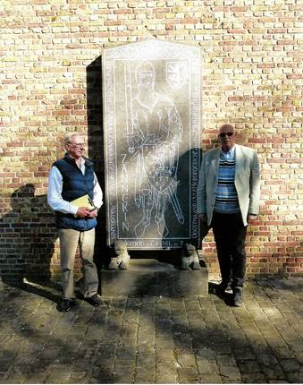
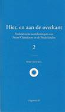
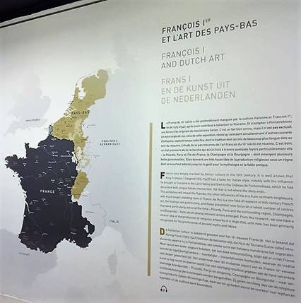
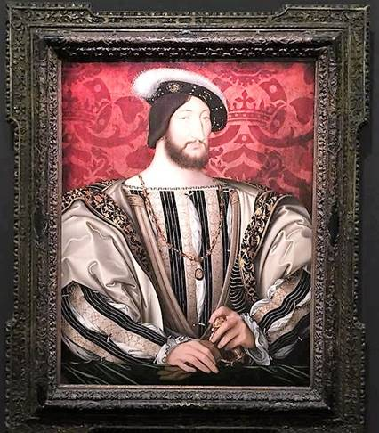
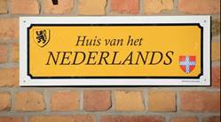
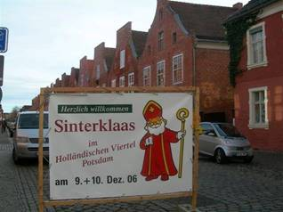

> nieuwsbrief
> 36e jg. - 1e trimester 2018
 Aan de Zannekin-gedenkteen te Lampernisse in 2017
Hernieuwen
ledenbijdrage voor 2018
Hoewel we,
zoals elk jaar overigens, straks weer geconfronteerd zullen
worden met de uiteraard weer eens naar boven aangepaste
post-tarieven, blijft uw ledenbijdrage voor 2018 ongewijzigd. Ze
beloopt voor het in mei 2018 te verschijnen nieuwe 40e - Jaarboek
De Nederlanden extra muros en voor de
driemaandelijkse Nieuwsbrief Zannekin
29 . Vanaf 35 wordt u met dank als steunend lid geboekt.
Betalen kan
enkel nog via ons Belgisch zogenaamd Europees rekeningnummer
iban BE13 4648 2202 5139 bic: KREDBEBB BE, waarvan de
rekeningoverzichten ons dagelijks meegedeeld worden. Enkel
leden buiten België vinden bijliggend nog een betaalformulier.
Gezien veelal via e-banking vereffend wordt worden deze binnen
België stilaan overbodig. Leden genieten bovendien ook
een tastbare vermindering op de deelnamekosten van de Zannekin-activiteiten.
Dringend
verzoek
Onze Zannekin-Nieuwsbrief
verschijnt slechts driemaandelijks. Mochten onze
leden en belangstellenden ons massaal hun e-postadres willen
meedelen, dan wordt het ons mogelijk hen ook tussentijds te
bereiken teneinde hen vlotter te informeren omtrent de op
stapel staande activiteiten en andere initiatieven die in het
verlengde daarvan liggen. Wil ons daarom uw e-adres meedelen
via een kort berichtje aan maurits.cailliau@skynet.be
met als boodschap: interesse in Zannekin.
De obelisk
herinnerend aan
de Slag aan de
Penebeek
Onze Studie-uitstap zal dit jaar
doorgaan op zaterdag 28 april 2018. Onze
voorjaarsactiviteit behelst andermaal een busuitstap die ons
naar de Frans-Vlaanderen zal brengen, waar in 1677 aan de voet
van de Casselberg de noodlottige veldslag geleverd werd te
gevolge waarvan deze contreien bij Frankrijk ingelijfd werden.
We bezoeken er het Huis van de Veldslag en krijgen (op
facultatieve basis) de gelegenheid deel te nemen aan de
jaarlijkse voettocht doorheen het toenmalige slagveld.
Vooraf bezoeken
we in Waten het graf van de Frans-Vlaamse voorman
priester Jean-Marie Gantois, die 50 jaar geleden
overleed en op wiens graf de Vereniging/Stichting Zannekin
destijds een gedenksteen aanbracht waarop de Leo Belgicus of
Nederlandse Leeuw prijkt, gebeiteld door Willem Vermandere.
Ontmoetingsdag
2018
Deze zal
doorgaan op zaterdag 6 oktober 2018 te Ravestein
bij Nijmegen. Alhoewel de aanleiding tot de Vrede van Nijmegen (1678)
uiteraard al aan bod zal komen tijdens onze Studie-uittap, zal
op deze dag het bredere plaatje geschetst worden die tot deze
vrede aanleiding gaf. Op deze dag dient men wel als
traditioneel voor onze Ontmoe-tingdagen op eigen houtje heen.
Over beide activiteiten uiteraard ruimere info in onze volgende
Zannekin Nieuwsbrieven.
Die luxemburgische Sprache in
Belgien
Uittreksel uit Apropos
Großherzogtum (het officiële internetportaal van het Groothertogdom
Luxemburg):
Im grenznahen Arelerland
(der Region rund um die in der belgischen Provinz Luxemburg
gelegenen Stadt Arlon) sprechen 5.000 bis 20.000 Menschen
Luxemburgisch als Muttersprache. In den 1960er Jahren waren es
noch etwa 50.000. Allerdings haben 14,5% der Bewohner der Region
Basiskenntnisse der luxemburgischen Sprache.
Durch den Vertrag von London vom 19. April 1839 wurden
einige Ge-meinden, die dem Großherzogtum Luxemburg angehört
hatten, dem belgischen Königreich zugeteilt.
Anfangs hatte diese neue Situation keinen Einfluss auf
die Nutzung des Luxemburgischen (auch francique
luxembourgeois genannt). Das änderte sich allerdings
spürbar nach dem Ersten Weltkrieg. Nach 1918 wurde die deutsche
Sprache als "Feindessprache" angesehen und demnach mehrheitlich
abgelehnt. Diese Situation brachte mit sich, dass die
bel-gischen Behörden ihre Luxemburgisch sprechenden Einwohner
be-schuldigten, einen deutschen Dialekt zu sprechen.
Während des Zweiten Weltkriegs dann verschlimmerte
sich die Situ-ation und die Belgier begannen, die Bewohner der
Arloner Region zu verdächtigen, die "Feindessprache" zu
sprechen.
Trotzdem konnte das Luxemburgische überleben, und bis
in die 1960 Jahre hinein konnte sich die Sprache im Arelerland
einer großen Leben-digkeit erfreuen. Als dann Französisch im
Kindergarten als obligato-rische Sprache eingeführt wurde,
begann das Luxemburgische an Be-deutung zu verlieren.
Heute wiederum besteht in der Region der von der
Luxemburgisch sprechenden Gemeinschaft gegründete Verein Areler
Land a Sprooch a.s.b.l., die sich zum Ziel gesetzt hat die
luxemburgische Sprache und Kultur zu fördern.
Cyriel
Moeyaert
Een meesterwerkje
Prof. Em. Herman vander Haegen schreef een
prachtig boek, met als titel De eerste Vlaamse
ruimte. Het is de geschiedenis van de
kerkelijke driedeling van de Nederlanden in 1559, waarbij voor
de eerste keer het Nederlandstalige deel van de Zuidelijke
Nederlanden als één geheel beschouwd wordt, één kerkprovincie
Mechelen. Dat was de wil geweest van keizer Karel. De vijf
nieuwe bisdommen waren Ieper, Brugge, Gent, Antwerpen en Den
Bosch (s Hertogenbosch). Er is iets wat niet klopt in het
bisdom Ieper. Een stuk Nederlandstalig gebied werd aan het
Bisdom Sint-Omaars toegezegd. Dat ging in tegen het principe
omdat het bisdom Sint-Omaars bij de Franstalige bisdommen van de
Nederlanden hoorde. Dat blijkt duidelijk in de kaart van het
bisdom Ieper van Blaeu. Bron: www.doorbraakboeken.be.
Nuze mensjen
in woord en beeld
Dat is de titel van een brochure van Flor
Barbrys volkstoneel voor Fransch Vlaanderen, een brochure die
we gratis ontvingen op het feest van het 70-jarig bestaan van
het Komitee voor Frans-Vlaanderen
te Volkerinkhove. Ze bevat boeiende getuigenissen van
Frans-Vlamingen uit Abele, Vleteren, de Katsberg,
Sint-Janskappel, Boeschepe, Warhem, Houtkerke, Moerekerke,
Bambeke, Wormhout, Rekspoede, Bray-Dui-nen, Arneke, Noordpene,
Belle en Pitgam, meestal in hun Frans-Vlaamse moedertaal. Zo b.v
Jean-Paul Houvenagel, zoon van burge-meester Maurits Houvenagel
uit Vleteren dat hij Vleeter noemt die dankbaar zijn vader
aanhaalt: dan me moesten nuus Vlams onderhouden en die zich
ekskuseert voor de fauwten. In dezelfde brochure lezen we over
de groepen die geregeld thope kommen voor Vlaemsche
conversaesjen. Dat gebeurt in Rekspoede, in Volkerinkhove, en
in de steek van Loberge komen ze hun gedichten of verhaaltjes
voor mekaar voorlezen. In Belle is er een cursus Vlaamsj. Dat
naast de verschillende cursussen Nederlands zoals bij IJzerhoek
waar daarnaast ook een cursus Vlaamsj gegeven wordt.
Verborgen
schatten
In de archieven van Gent en Sint-Omaars
berusten nog niet gepu-bliceerde Nederlandse bronnen. In het
archief van de bibliotheek van Sint-Omaars. Een bundel
Nederlandse kwitanties uit het eind van de 14e eeuw. Een
Nederlandse vertaling van de bulle waarmee Pius II alle vorsten
en volkeren aanmaande om een kruistocht te ondernemen tegen de
Turken in 1463. Een bundel Nederlandse processen uit het eind
van de 15e eeuw. Een Nederlands testament (BB 68-69, eerste
register, 11e serie). De parochiale registers en veel andere
documenten uit de Sint-Margrietkerk waren meestal in het
Nederlands.
Komense
Bestuursverslagen ofte Resoluties
In Gent bevindt zich in het archief de
Nederlandse besluiten en mededelingen van het Komens bestuur.
Het kan erg boeiend en openbarend zijn. We zouden er een kopie
van moeten kunnen laten maken. Zie handschrift De resoluties van de stad
Komen of Comines in het stadsarchief van Gent.
Hier,
en aan de overkant (deel 2)
Deze nieuwe uitgave is een
bundeling van teksten die Wido Bourel in diverse media in de
laatste jaren publiceerde. Deze teksten handelen over
Frans-Vlaanderen, de Nederlanden en Europa. Over vreemde en
bezienswaardige plekken en landschappen, merkwaardige feiten en
gewoonten, vermaarde of vergeten mensen. Dit boek volgt op een
eerste uitgave die hij in 2011 publiceerde. Hier, en aan de overkant
is een ABC boekje. Zie hier de inhoud van A tot Z :
Voorwoord
- A van Aldegonde en
Marnix - B van Bernadetta en de
kleine bosnimf - C van
Childeric in Doornik - D van
Dathenus en het Wilhelmus - E
van Engelstalig gedoe - F
van Fries ontdekt Frans-Vlaanderen en van Furfooz
in de Westhoek - G
van Generaal Vandamme - H van
Hauts-de-France of Lage Landen - I
van In memoriam - J van
Jan Six versus Geert Mak - K van
Kattenstreken in Sint-Omaars en van Kukeleku
- L van Laudatio voor
Cyriel - M van Moedergodin
Nehalennia - N van Nieuwen dyck
tegen de Franschen - O
van Opstand in de Westhoek (1813-1815) en van Overlijden
van een condottiere - P
van Paradox van de moedertaal en van Prins
Max
van Hessen - Q van Quo vadis - R
van Reinout van Bonen - S
van Stop de tijd - T van
Talen en totalitarisme - U van
Uitgewiste sporen - V van
Vuurslag als nationaal symbool - W
van Waterloo en de flaminganten - X
van Xenomanie en francomanie - Y van
Ykpaïka waarheen? -Z
van Zwanen en Zwaanridder - De
Vlaamse Leeuw in het Frans - Het
Wilhelmus in het Frans. Het boek is in een
beperkte oplage gedrukt en komt niet in de boekhandel. Reserveer
dus snel uw exemplaar.
________________
ISBN
978-94-914360-7-9 - NUR 620 - 124 blz. met een vijftigtal
illustraties - Formaat: 20 x 12,5 cm - Prijs: 17 euro + 3,50 euro verzendkosten. Bestellen
via IBAN BE38 8440 4509 0172 t.n.v. Wido
Bourel, 2288 Bouwel.
Frans I en de kunst van de Nederlanden, een expositie in het Louvre van Parijs
Ruud Bruijns
Tot 15
januari 2018 loopt er een expositie in het Louvre over Nederlandse kunst tijdens de
regeerperiode van de Franse koning Frans I. Frans I staat bekend
om zijn voorliefde voor Italiaanse kunst, wat niet verwonderlijk
was aangezien hij regeerde (1515-1547) in de hoogtijdagen van de
Renaissance. Hij voerde ook militaire campagnes in Italië en als
gevolg daarvan werd hij in 1525 gevangen genomen door Keizer
Karel V na de slag bij Pavia. Karel V was de heer over de
Nederlanden, zijn geboorteland, dat hij in 1549 formeel tot één
land maakte. Uit dit land van zijn aartsvijand nodigde Frans I
kunstenaars uit en daarover gaat de expositie in het Louvre.
Als het
over de Nederlanden gaat uit deze periode, gaat het vaak over de
provincies Vlaanderen en Brabant, met andere woorden de
zuidelijke Nederlanden. De expositie laat echter aan het begin
met een grote wand-kaart zien hoe uitgestrekt de Nederlanden
waren van Groningen tot het vrijgraafschap Bourgondië.
Blijk-baar sloeg de fantasie bij de samen-stellers ietwat op
hol, want ook de Oost-Friesland, Bentheim en Lingen werden op de
kaart weergegeven als onderdeel van de Nederlanden. De expositie
was ook in haar samenstelling uitgesproken heel-Nederlands kunstenaars
uit Antwerpen en Brussel, maar ook uit Leiden en Haarlem worden
opgevoerd en uitgebreid omschreven.

De
expositie is zeer veelzijdig van imposante wandtapijten tot
minuscule boekverlichtingen, en uiteraard schilderijen, veel
schilderijen. Men richt zich overigens bewust met name op
kunstenaars die tegenwoordig bijna in de vergetelheid zijn
geraakt - Godefroy le Batave, Noël Bellemare, Grégoire Guérard,
Batholomeus Pons. Persoonlijk werd ik getroffen door de
schoonheid van het portret van Frans I door Godefroy le Batave.
Godefroy maakte ook een portret van Johannes de Doper met het
gezicht van Frans I. Uiteraard was de portretkunst van toen het
Photoshop van nu men kan de koning mooier voorstellen dan hij
werkelijk was, maar dat doet niets af aan de kwaliteiten van de
kunstenaar zelf.
 Portret
Frans I door Godefroy
le
Batave
Marten Heida
Van een oord van verschrikking naar een
plaats van gedenken
De in
bovenstaande genoemde onderscheidende kenschetsing heeft
betrekking op Esterwegen, een dorp gelegen in het noordoosten
van de huidige Kreis Emsland. Wie nu kennismaakt met deze regio
kan zich moeilijk voorstellen dat het in het verleden er hier
heel anders uitzag. Het Eemsland stond bekend als een streek
waar de armoe heer en meester was als gevolg van de weinige
economische mogelijkheden. Het gebied ten oosten van de Eems
bestond voor een groot deel uit heidevelden en ten westen er van
strekte zich het grensoverschrijdende hoogveenmoeras (het
Bourtanger Moor) uit. Geen wonder dat het
werkeloosheidspercentage hoog scoorde. Dat was vooral het geval
in de jaren na de Eerste Wereldoorlog toen Duitsland gebukt ging
onder de lasten van oorlogsschulden en inflatie. Om de werklozen
toch enig uitzicht te bieden werden werkgelegenheidsplannen
opgesteld die ondermeer resulteerden in ontginningsprojecten die
werden aange-stuurd vanuit Esterwegen. Voor de noodzakelijke
huisvesting werden de arbeiders ondergebracht in barakkenkampen.
Duitsers schieten niet op
Duitsers
Grote
veranderingen voltrokken zich in het voorjaar van 1933 na de
machtsovername door de Nazi's. De barakkenkampen kregen een
totaal andere bevolking. Ze bestond uit mogelijke tegenstanders
van het nieu-we regiem zoals socialisten en communisten. Ze
werden zogenaamd in beschermende hechtenis genomen en bewaakt
door mannen die deel uitmaakten van de Schützstaffel. Binnen de
kortste keren zaten de barakken overvol. Het arbeiderskamp van
Esterwegen was herschapen in een concentratiekamp. Het genoot de
twijfelachtige eer met de vijf-tien nevenkampen uit te groeien
tot het op één na grootste (het grootste was Dachau). Van de in
het tussenkopje genoemde erecode was al gauw geen sprake meer.
De willekeur was er heer en meester. Dat blijkt uit de velen die
door hun "beschermers" om het leven werden gebracht. Door hun
afschrikwekkend voorbeeld moest elke vorm van mogelijke opstand
de kop worden ingedrukt. En voor zover de gevangenen niet
vermoord werden, werden ze op de meest mensonwaardige manieren
mishandeld en uitgebuit.
Het werd nog erger
Achteraf bekeken
was dit nog maar een voorspel van wat er ging komen. Als in
september 1939 het Duitse leger Polen binnenvalt, duurt het niet
lang of ook de kampen van Esterwegen krijgen hun deel van de
krijgsgevangen Poolse soldaten te verwerken. Aangezien ze
behoorden tot het verachtelijke Slavische ras werd er
overeenkomstig met hen ge-handeld. Dagelijks moesten ze zware
arbeid verrichten in het hoogveen-moeras; maar ze kregen geen
eten dat daarmee in overeenstemming was. Het gevolg was dat
velen dit harde bestaan niet vol konden houden en
omkwamen.
Maar het zou nog
veel erger worden. Als in juni 1941 de Duitse troepen de
Russische ruimte binnenstormen, komt al gauw een stroom van
Russische krijgsgevangenen op gang. Onder erbarmelijke
omstandigheden werden ze gehuisvest in ondermeer de vijftien
kampen van het KZ Esterwegen. Ook zij werden te werk gesteld in
de ontginningswerken in het hoogveenmoeras. De massagraven zijn
de stille getuigen van hun gedwongen aanwezigheid. Geschat wordt
dat minstens 20.000 daar een laatste rustplaats gekregen
hebben.
Maar daar bleef
het niet bij. Als gevolg van het toenemende verzet vanaf 1942 in
de bezette gebieden vond ook menige verzetsstrijder
noodgedwongen de weg naar de kampen van Esterwegen. En die
werden daar niet zachtzinnig behandeld getuige de weinigen die
het verblijf hebben overleefd.
Tragiek
Intussen keerden
in het oosten de krijgskansen. Op de nadering van het Rode Leger
zoeken duizenden uit de door deze soldaten bedreigde gebieden
een heenkomen in de vlucht. Deze bevolking krijgt als het ware
de rekening gepresenteerd voor wat de Duitse soldaten aan
gruweldaden hebben aangericht tijdens hun opmars.
Na de
ineenstorting van Nazi-Duitsland in mei 1945 moet er voor deze
vluchtelingen - die later nog aangevuld worden met de uit hun
woongebieden verdrevenen - huisvesting worden gevonden.
Aangezien het Eemsland in die tijd een dunbevolkt gebied was,
krijgt het een verhoudingsgewijs groot deel van deze
mensenstroom toebedeeld. Voor een deel worden ze opgevangen in
de barakken van het nu voormalige KZ Esterwegen. De
tragiek is dat bij de inval in Rusland de bevolking was
voorge-spiegeld dat er in de veroverde en vervolgens bezette
gebieden grote toekomstmogelijkheden lagen. Het leger had
gezorgd voor "Lebensraum". Maar deze droom is kapotgeschoten
door de Russische kanonnen. In allerijl moest gevlucht worden om
uiteindelijk voor een deel "Lebensraum" te vinden in het verre
Eemsland.
Gedenkplaats
Op 31 oktober
2011 was het zover. Toen kon Hendrik Verheyen - als scholier lid
van een Vlaamse verzetsgroep en op 27 juni 1943 op 18-jarige
leeftijd gevangen genomen en gedeporteerd naar Esterwegen waar
hij als "Nacht und Nebel"-gevangene verbleven heeft van 3
september 1943 tot 15 mei 1944 - als één van de weinige
overlevenden met een aangrijpende toespraak de "Gedenkstätte
Esterwegen" officieel openen. Het was het eindstadium van een
proces dat in de late jaren -70 van de vorige eeuw op gang kwam.
Jongeren gingen zich afvragen wat er in de jaren tussen 1933 en
1945 in hun streek gebeurd was. Deze belangstelling resulteerde
in 1981 in de oprichting van een "Aktions-commitee für ein
Documentations- und Informationszentrum (DIZ) Emslandlager
Papenburg e.V". Eén van de eisen was in Esterwegen een
gedenkplaats in te richten. Echter op het voormalige kampterrein
was sinds 1963 een depot van de Bundeswehr gevestigd. Het zou
duren tot juni 2006 voor dit terrein beschikbaar kwam. Vanaf dan
komt er schot in de zaak mee door toedoen van een beslissing van
de Kreis Emsland. Plannen worden gemaakt en uitgewerkt als
gevolg waarvan de verwer-kelijking steeds meer gestalte gaat
krijgen. Dat blijkt ondermeer uit de oprichting van de "Stiftung
Gedenkstätte Esterwegen" die op 24 september 2007 haar beslag
krijgt. Het eindresultaat van alle inspan-ningen kan worden
afgerond op de hierboven al genoemde datum van 31 oktober 2011.
Ten slotte
Wie in het
huidige Eemsland op zoek wil gaan naar de regio van vroeger zal
tot de ontdekking komen dat de armoe heeft plaatsgemaakt voor
welstand. Het loont alle moeite om daar kennis mee te maken.
Rond de tijd dat u deze tekst onder ogen krijgt beraadt u zich
mogelijk op vakantieplannen voor de komende zomer. Ik kan u het
Eemsland van harte aanbevelen. Naast de gedenkplaats Esterwegen
zijn belang-rijke blikvangers het Slot Clemenswerth te Sögel en
het Moormuseum te Geeste-Gross Hesepe. En ook de steden Lingen,
Meppen en Papenburg (Meyer-werf) nodigen uit om bezocht te
worden. Via internet kunt u zich van de nodige informatie
voorzien.
Bron:
diverse afleveringen van het Emsland-Jahrbuch.
Marten Heida,
Rutte
III is Nederlandsvriendelijker, NOB is gered
Ondanks verdienstelijke
pogingen binnen en buiten het Nederlandse Parlement om het
Nederlands als officiële taal van het Koninkrijk in de grondwet
in te schrijven, lijkt het er niettemin op dat de taal van
Vondel op meer eerbied mag bogen binnen de regering Rutte III
dan in de vorige. Overigens heeft voormalig Zannekin-bestuurslid
Erik Verbrugh zich in de lijn van zijn vader, die veel jaren
GPV-volksvertegenwoor-diger was, al heel wat verdienstelijk werk
verzet in die richting.
Tijdens de
bezuinigingsregering van Rutte II dienden talrijke posten te
worden afgeslankt. De eerste slachtoffers bij dergelijke
operaties zijn de cultuur, de milieuzorg en het onderwijs. Zo
werd op drastische wijze de subsidiekraan dichtgedraaid ten bate
van het NOB (Nederlands
On-derwijs in het Buitenland). Minister Jet Bussemaker
(PvdA) in de regering Rutte II zag er geen graten in het
Nederlandstalig Onderwijs in het Buitenland droog te leggen.
Haar opvolgster Ingrid van Engelshoven (D66) heeft de kraan
opnieuw opengedraaid tot grote opluchting van de schooldirecties
in de diverse wereldlanden. Dit zijn om en bij 14.000 leerlingen
in 191 onderwijsinstellingen op alle continenten. Nederlan-ders,
Vlamingen en overige Nederlandstaligen/-kundigen lopen er
school. In de randgebieden, die tot de belangstellingssfeer van
onze Stichting Zannekin behoren, is er één en al tevredenheid
over de her-vatting van de financiële steun te bespeuren. Een
greep uit deze onderwijsinstellingen: Stichting NTCN in Rhede
(D), NTC-De Brug in Bad-Bentheim (D), De Oranje Leeuw in
Düssseldorf (D), NTC Luxem-burg (L), ES Luxemburg II in
Bertringen (L), Europese School Luxem-burg I op de Kirchberg
(L).
Het
Komitee voor Frans-Vlaanderen (KFV) bestaat 70 jaar
In het amicale
Frans-Vlaamse straatdorp Volckerinckhove werd 70 jaar Komitee
voor Frans-Vlaanderen gevierd. Veel belangstelleden uit
Bel-gië, Frankrijk en Nederland daagden op. Het huidige bestuur
bestaat uit vier personen. Voorzitter is Johan Strobbe. Hij is
historicus en leraar geschiedenis/esthetica in Roeselare. Sinds
1998 is hij bestuurslid van het KFV en redacteur van de KFV-Mededelingen. Hij
volgt Guido Carron op. Dirk Lievens is penningmeester. Hij is
jurist en schepen van cultuur, toerisme, onderwijsbeleid van de
stad Roeselare. Dirk Verbeke is sinds 1997 secretaris van de
raad van bestuur van het KFV. Frans-Vlaming Francis Persyn uit
Marcq-en-Baroeul (F) is leraar Duits en Nederlands in
Frans-Vlaanderen.
Huis
van het Nederlands te Belle in Frans-Vlaanderen
Één van de beste,
wellicht zelfs de beste realisatie ten voordele van het
Nederlands in Frans-Vlaanderen blijft de oprichting van het nu
bijna twee decennia jonge Huis van het Nederlands (HvhN) te
Belle (Bailleul). De oprichting kwam er mede dankzij het
Vlaamsvriendelijke stadsbestuur met burgemeester Jean Delobel
aan het hoofd. Zijn dochter Sandrine Demange presteerde er
tastbaar pionierswerk. Het huis is eigendom van de stad.
Wie tot voor kort het
HvhN bezocht, bespeurde echter geen woord Nederlands aan de
buitenzijde. De Stichting Zannekin ijverde er een tijd lang voor
om op zn minst een Nederlandstalige vermelding aan de voorgevel
aan te brengen naar analogie met anders-talige gelijkaardige
instel
lingen zoals het Goethe In-stitut, het Instituto Cervan-tès e.a., die wel hun be-staansreden ook in de eigen taal afficheren. Re-denen, die kant noch wal raakten, werden door de vorige raad van bestuur aangehaald. Ze verhinderden het plaatsen van een bord met een Nederlandstalige vermelding. Een nieuwe wind blies door een nieuwe raad van bestuur en de vzw EUVO kon een bord aan de voorgevel plaatsen met de vermelding Huis van het Nederlands. Daar het huis stads-eigendom is, moest het stadsbestuur zijn fiat geven. Huidig burgemeester Deneuche is het
Bruegeltaferelen
wijken voor Theepotten in Berlijn
Zon lustrum geleden
organiseerde onze Stichting Zannekin een meer-daagse reis naar
Noord-Polen en Noord-Duitsland. Ook Berlijn werd bezocht waarbij
een gezellige feestavond met vertegenwoordigers van de nu 15
jaar jonge vereniging Fläming-Flandern eV op touw werd gezet.
Een heerlijke feestdis met Oost-Pruisische specialiteiten
bekoorde de Duitse, Nederlandse en Vlaamse tafelgenoten in het
sierlijke kader van het ooit sterk geprezen restaurant Kolk in
de Berlijnse wijk Spandau. Kopieën van werken van Pieter Bruegel
de Oude verfraaiden de muren van het gezellige spijshuis. Een
plaatselijke Duitse kunstenaar had ze ooit zorgvuldig op de
muren geschilderd. Bij mijn jongste bezoek aan Berlijn in
november 2017 zocht ik tevergeefs deze unieke eetgelegenheid met
zijn culinaire hoogstandjes op. Het pand staat er nog maar er
bleef niets meer over van het ooit zo gezellige spijshuis. Een
theehuis kwam er in de plaats met theesoorten van over de hele
wereld. Het interieur oogt koel en niet meteen uitnodigend. Van
Bruegel is niets meer te bespeuren. Niemand kon mij informeren
waar-heen de Kolk was verhuisd. Is de heimatcultuur dan zo
achterhaald?
De
Stichting Zannekin en de Zwijgende Voettocht aan Penebeek
Onze Stichting Zannekin organiseert op
28 april 2018 zijn studiereis naar de Frans-Vlaamse Westhoek.
Jean-Marie Gantois in Watten en de 42e Zwijgende Voettocht zijn
de themata. Zie ook onder Mededelingen
Met de
Stichting Zannekin naar Midden-Europa
Noteer eveneens de data van de
meerdaagse reis naar Duitsland, Polen en Tsjechië. Van 29 juli
tot en met 8 augustus 2018 reizen langs en naar plaatsen, die
betrekking hebben op onze Nederlanden, uiteraard naast tal van
andere bezienswaardigheden. Een greep uit het programma:
Berlijn, Potsdam (Holländer Viertel), Fläming, Breslau/Wrocław
(grootst aantal universiteitsstudenten Nederlands), Kraków
(Vlaamse wandta-pijten), Wilamowice (Vlaams dorp),
Ollmütz/Olomouc, Brünn/Brno, Praag/Praha (Vlaams-Nederlandse
kunst en architectuur), Marien-bad/Mariánské Lázně (het Boheemse Spa), Nürnberg (stad van
Albrecht Dürer). Meer details in de volgende nieuwsbrief en
spoedig op de webstek.
